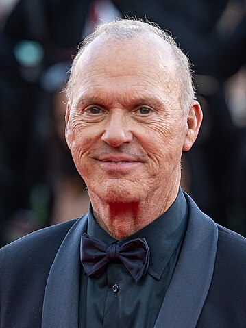
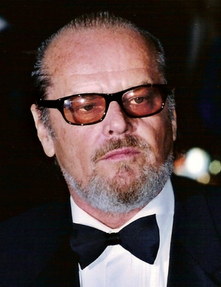
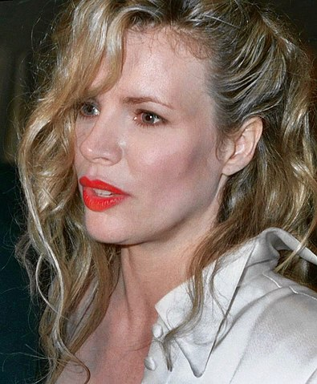
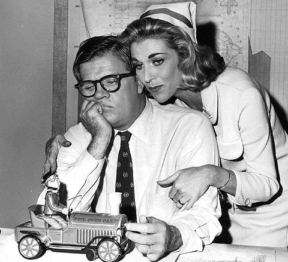

«
Бетмен
»
(англ. Batman)
— американський фільм Тіма Бертона 1989 року, що базується на однойменній серії коміксів про супергероя Бетмена.
Акторський склад:

Майкл Кітон
Бетмен / Брюс Вейн

Джек Ніколсон
Джокер / Джек Напьє

Кім Бейсінгер
Вікі Вейл

Пет Гінгл
комісар Джеймс Ґордон